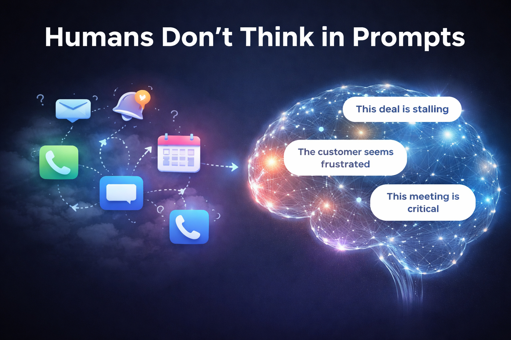
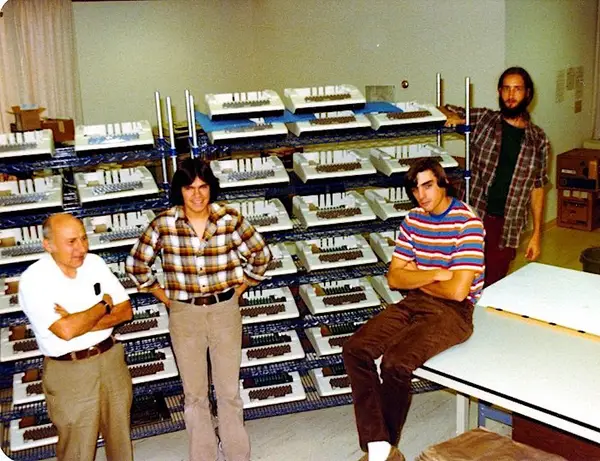
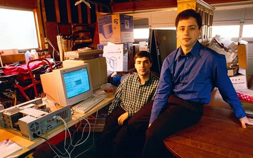
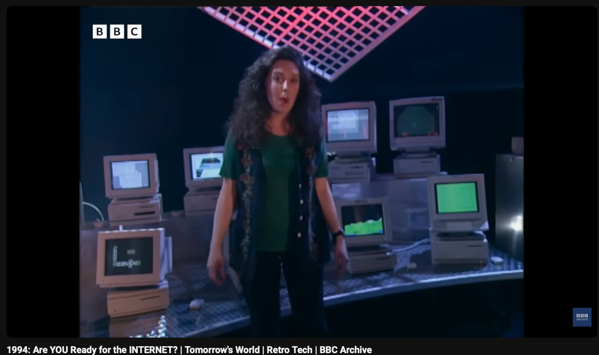
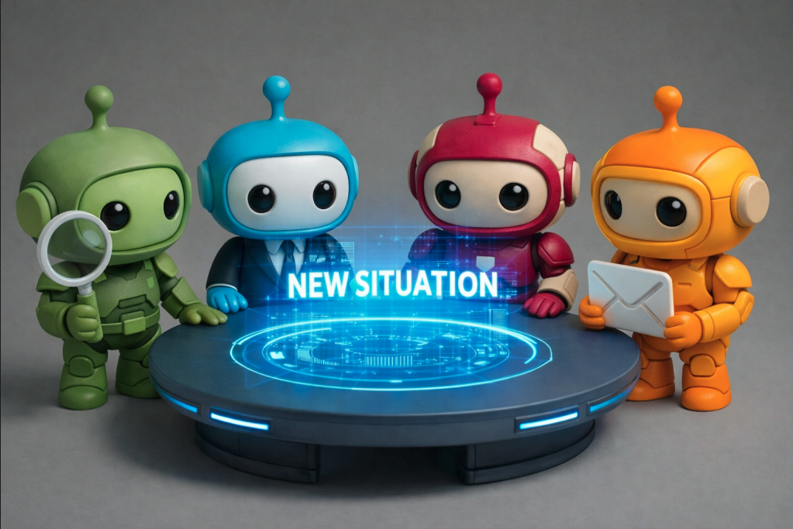
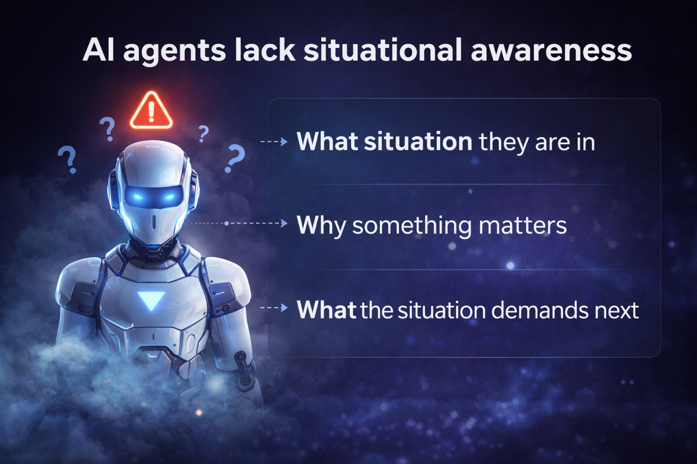
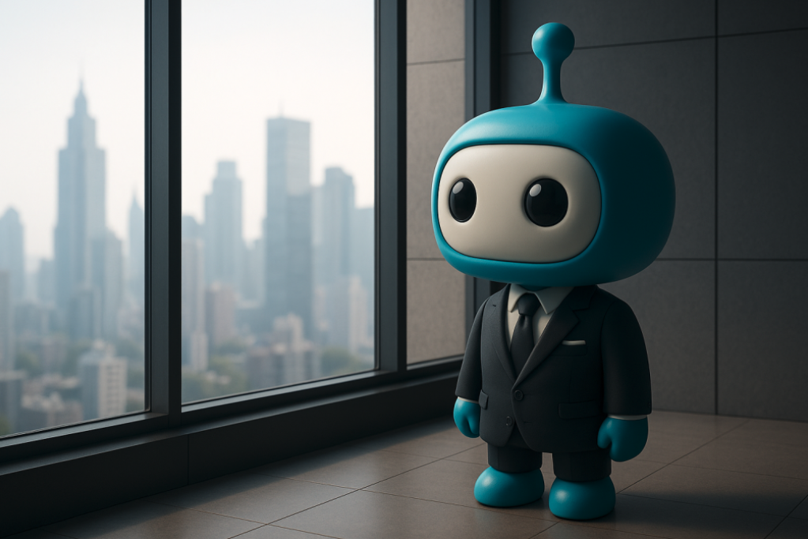
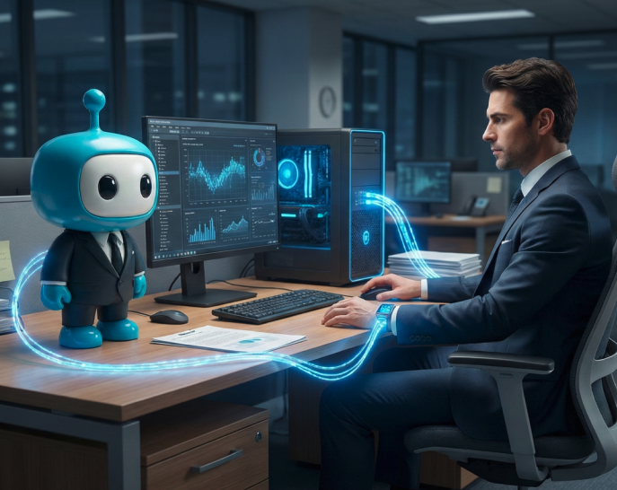

Building the future of autonomous intelligence — from reactive AI to agents that truly understand the situation.
The defining technologies of each era create massive shifts. We're at the beginning of the AI agent era — and the window to shape it is now.




Two moments that capture why every generation gets one defining technology.
Current AI agents are powerful but fundamentally limited:
Humans don't think in prompts. We think in situations — combining events, time, context, and meaning. Intelligence is knowing what matters.

Situational AI treats situations as the atomic unit of intelligence.
Not events. Not triggers. Not workflows. But lived, relatable situations that combine context, intent, and meaning — the way humans naturally process the world.
A cognitive framework that enables AI agents to think and act with situational awareness:

Automation follows instructions. Agency understands context.
Situational AI enables:

Specialized agents coordinated through shared situational understanding. Not just individual intelligence — collective intelligence that emerges from shared situational memory.
AI agents run digital operations. Humans supervise outcomes, not processes. Delegation replaces automation.
The human-like AI coworker — a private, always-on situational assistant that manages email, meetings, and planning. It escalates only when needed.
Not bigger models — better cognition. Situational AI is a step toward human-supervised autonomous intelligence that is explainable, teachable, and self-improving.
LLMs unlocked reasoning, but lack cognition. Businesses need autonomy, not more tools. The agent era has started, but situational intelligence is the bottleneck.
Few are working on this layer. Foundational problems create leverage. The opportunity to define how AI agents think is here — right now.
We're building an open community around the frontier of context-aware AI. Here's why people are joining:
Work on foundational problems in how AI agents think and reason.
Help build something that doesn't exist yet — the cognitive layer for AI.
Influence the architecture of situational awareness in autonomous systems.
Go beyond the hype — deep systems thinking for people who want to build what matters.
Let's build Situational AI together.